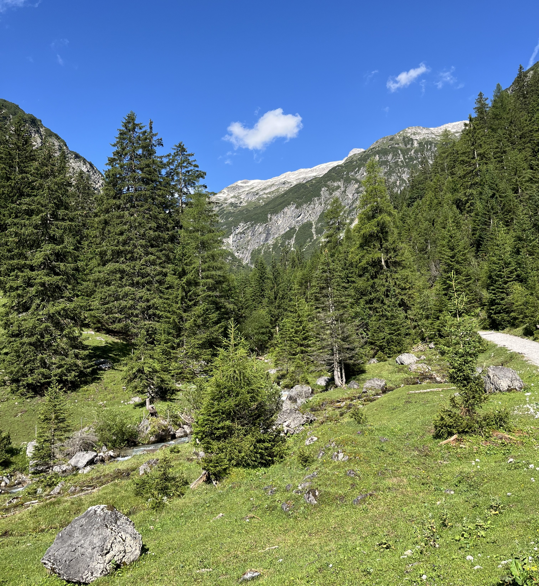
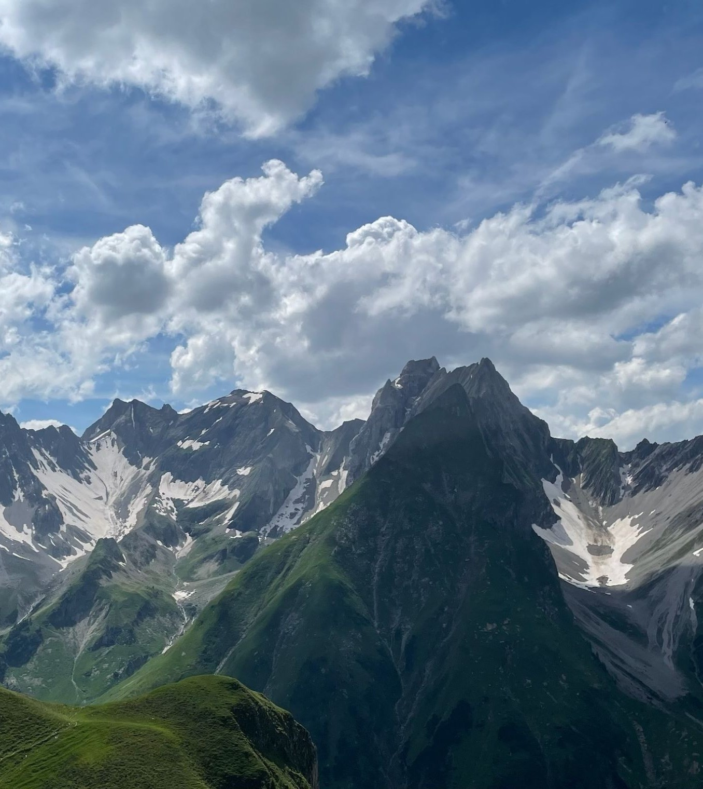

The route was divided into several stages, each with its own character and scenery. Some days led through quiet valleys and forests, while others included steep climbs and rocky mountain paths. Higher sections of the trail offered spectacular views of the surrounding peaks and glaciers. As the journey continued, the landscape slowly changed from alpine terrain to greener and warmer valleys in the south. Each stage brought new impressions and made the crossing a unique experience.
Stage 1
Germany to Austria

Stage 2
High Alps

Stage 3
South Tyrol